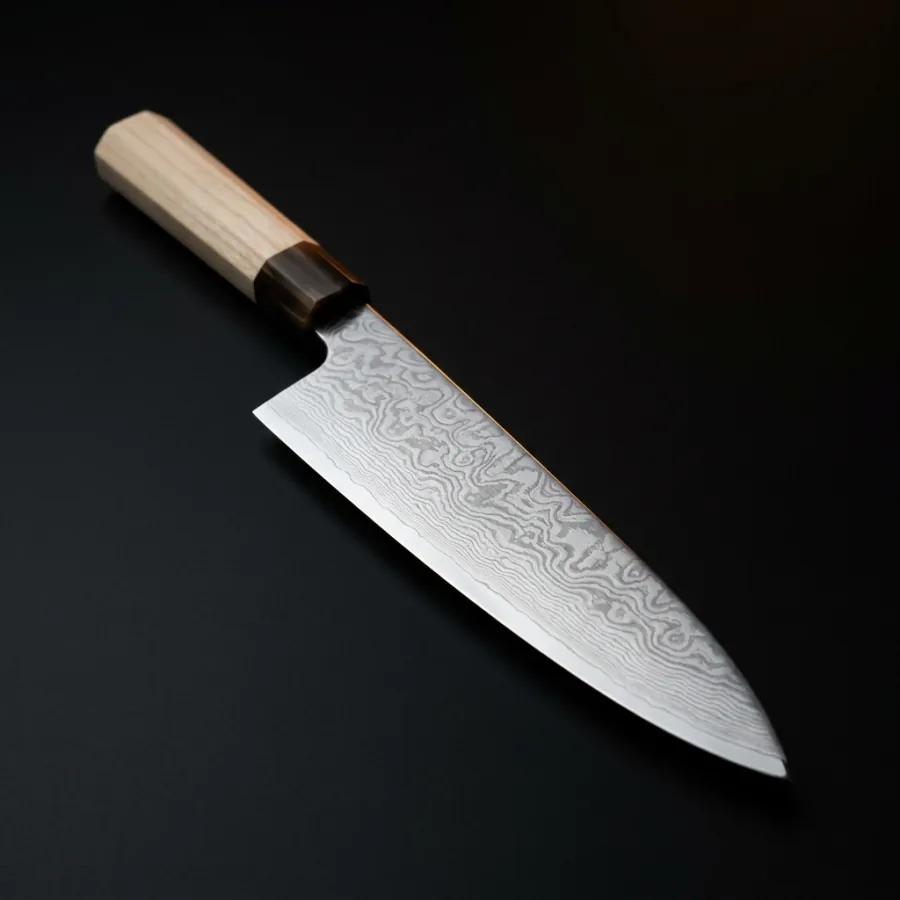

A blade seen edge-on, with the bevel hairline and three folded-layer ticks knocked out. One flat colour, legible at 24px. The wordmark is HTML type, never a graphic.
SOOT · #0A0A0B
EMBER · #D8551F
FORGE GOLD · #E8A33D
STEEL · #6E7B85
ASH · #CFC8BE
Ember is the only saturated colour on the page and it means “act” — primary buttons, the active filter, the eyebrow. Forge gold carries prices and hovers. Steel and ash carry everything else.
Folded damascus over a hard core, ground to a mirror bevel at 15° a side. The pattern isn’t printed on — it’s what steel does when you fold it sixty-one times.
Okumi · Forged by one pair of hands
VG-10 CORE · 61 LAYERS · 61 HRC · 210 MM · 198 G

£620
KNIVES · 210 MM
The chef’s knife. 61-layer damascus over a VG-10 core, mirror bevel, ho wood handle.
Near-black ground everywhere. One hard low key light, one narrow ember rim.
Violent falloff into black — no fill, no studio softbox wash. Macro stays tack
sharp at maximum magnification; blur never stands in for scale. Nothing in any
generated frame carries text, engraving, kanji or a maker’s mark.
The delivered footage shows the smith’s hands fully lit rather than as the
backlit silhouette the brief specified — see production-notes.md §9. Product
stills stay object-only.